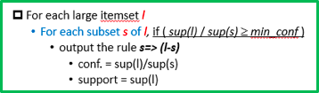
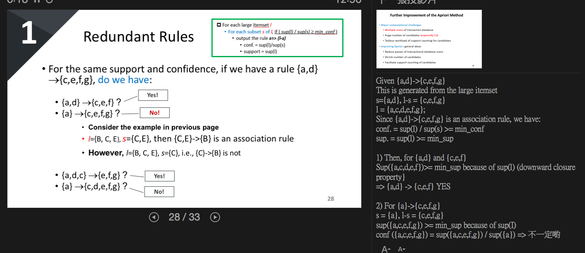
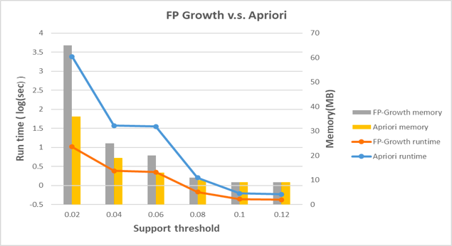
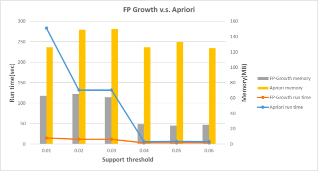

FreqPat
APRIORI
原理：如果某個項集是頻繁的，那麼它的所有子集也是頻繁的。該定理的逆反定理爲：如果某一個項集是非頻繁的，那麼它的所有超集（包含該集合的集合）也是非頻繁的。
Redundant Rules


FP GROWTH
mining fp tree : low-frequent item first.
構建FP樹是算法的第一步，在FP樹的基礎之上再對頻繁項集進行挖掘。爲了構建FP樹，要對數據集掃描兩次，第一次對所有元素項出現次數進行計數，記住如果一個元素不是頻繁的，那麼包含這個元素的超集也不是頻繁的，所以不需要考慮這些超集，第二遍的掃描只考慮那些頻繁元素。
FPGrowth v.s. Apriori
Data 稀疏的話，FP花較多時間
| Apriori Disadvantage: | Advantage of the FP Growth approach |
|---|---|
| •Scan DB once each iteration à need lots of I/O •Candidate generation could be very slow •Huge memory consumption |
•Scan DB only twice •Much faster than the Apriori approach •Store a compact version of DB in memory |


Clustering
• Cluster homogeneity: the purer, the better • Cluster completeness: assign objects to same category if they are in ground truth • Rag bag: e.g., “miscellaneous” or “other” category • Small cluster preservation: splitting a small category into pieces is more harmful
‧集群同質性：越純越好 ‧群集完整性：如果對象屬於基本事實，則將對象分配到同一類別 ‧抹布袋：例如，“雜項”或“其他”類別 ‧小群集保存：將小類別拆分成碎片更有害